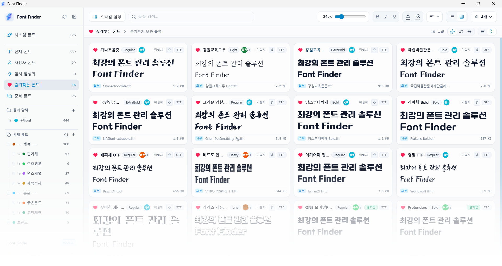

디자이너와 크리에이터를 위한
가장 가볍고 빠른 폰트 매니저
무거운 프로그램 때문에 답답하셨나요? 시스템 설치 없이 즉시 미리보고,
수만 개의 폰트도 버벅임 없이 실시간 가변 폰트 제어와 정밀 비교를 경험하세요.
가벼운 프로그램 용량
초고속 로딩 및 스크롤
완벽 지원
평생 무료 사용

✨ 핵심 기능
디자이너와 크리에이터를 위해 빠른 속도와 쾌적한 사용성을 중심으로 설계되었습니다.
👁️ 강력한 시각화와 실시간 미리보기
빠른 로딩과 즉각적인 적용
가벼운 구조와 효율적인 처리 방식으로 폰트를 빠르게 불러오고 적용할 수 있습니다.
설치 없이 바로 미리보기
.ttf, .otf, .ttc 등의 폰트 파일을 시스템에 설치하지 않고
바로 불러와 원하는 문장으로 미리볼 수 있습니다.
방대한 양의 폰트도 부드럽게 탐색
방대한 양의 폰트가 있어도 가상화 기반 리스트를 통해 빠르고 쾌적하게 탐색할 수 있습니다.
가변 폰트 실시간 조절
Variable Font의 두께, 너비 등 다양한 축을 슬라이더로 조절하며 원하는 형태를 실시간으로 확인할 수 있습니다.
폰트 겹쳐보기 및 정밀 비교
여러 폰트를 겹쳐 비교하거나 외곽선을 대조하여 글자 형태와 세부적인 차이를 쉽게 확인할 수 있습니다.
폰트 제작자를 위한 상세 비교
폰트 제작 및 검수 과정에서 필요한 글리프 형태와 세부적인 차이를 직관적으로 비교할 수 있습니다.
🗂️ 스마트한 라이브러리와 시스템 관리
Windows & macOS 지원
Windows와 macOS에서 동일한 경험으로 사용할 수 있는 크로스플랫폼 폰트 관리 프로그램입니다.
자유로운 서재와 즐겨찾기
스타일, 용도, 프로젝트 등에 따라 원하는 폴더와 세트를 만들어 폰트를 자유롭게 분류하고 관리할 수 있습니다.
통합 폰트 관리
여러 위치에 흩어진 폰트를 한곳에서 확인하고 관리할 수 있습니다.
시스템 폰트와 사용자 폰트 분리
운영체제에서 제공하는 기본 폰트와 사용자가 추가한 폰트를 구분하여 쉽게 관리할 수 있습니다.
🔍 스마트한 탐색과 폰트 관리
원클릭 폰트 활성화
작업할 때 필요한 폰트만 간편하게 활성화하고, 사용하지 않을 때는 비활성화하여 깔끔하게 관리할 수 있습니다. 영구 설치도 지원합니다.
직관적인 그리드 탐색
폰트의 모습을 한눈에 확인할 수 있는 시각적인 그리드 UI를 제공합니다.
스마트 & 사용자 지정 정렬
이름, 스타일, 날짜 등 다양한 기준으로 폰트를 정렬하고 원하는 방식으로 탐색할 수 있습니다.
중복 폰트 탐색
동일하거나 중복된 폰트를 빠르게 찾아 종류와 파일 경로를 확인하고 정리할 수 있습니다.
🎨 편안한 UI와 안정적인 사용 환경
다양한 테마
라이트, 글래스, 다크, 포레스트 등 취향과 작업 환경에 맞는 다양한 테마를 제공합니다.
8개 언어 지원
한국어, 영어, 일본어, 중국어(간체/번체), 스페인어, 독일어, 프랑스어를 지원합니다.
내장 및 외장 저장장치 지원
외장 HDD와 SSD 등 다양한 저장장치에 있는 폰트도 안정적으로 불러오고 관리할 수 있습니다.
가벼운 프로그램
불필요한 시스템 부담을 줄이고 쾌적한 사용 환경을 제공합니다.
모든 기능 무료 제공
폰트 관리부터 미리보기, 비교, 활성화까지 주요 기능을 별도의 기능 제한 없이 무료로 사용할 수 있습니다.
빠르고 쉬운 설치 및 실행 가이드
오픈소스 앱 최초 실행 시 운영체제 보안 경고가 나타나면 아래 절차로 3초 만에 해결할 수 있습니다.
다운로드한 Font.Finder_latest_aarch64.dmg를 열고 FontFinder.app을 응용
프로그램(Applications) 폴더로 이동합니다.
"확인되지 않은 개발자가 배포했기 때문에..." 안내가 표시되면 터미널(Terminal) 앱을 열고 아래 명령어를 붙여넣어 실행하세요:
xattr -cr /Applications/FontFinder.app
이제 FontFinder.app을 더블 클릭하면 제한 없이 쾌적하게 실행됩니다.
다운로드한 Font.Finder_latest_x64-setup.exe 설치 파일을 실행합니다.
파란색 Windows의 PC 보호 (SmartScreen) 창이 나타나면 문장 속 [추가 정보] 링크를 클릭합니다.
하단에 새로 나타나는 [실행] 버튼을 누르면 정상적으로 설치 및 실행이 진행됩니다.
자주 묻는 질문 (FAQ)
FontFinder에 대해 자주 묻는 질문들을 모았습니다.
무료로 사용할 수 있는 폰트 관리 프로그램이 있나요?
FontFinder(폰트파인더)는 폰트 미리보기, 비교, 라이브러리 관리 등의 핵심 기능을 별도의 제한이나 결제 없이 100% 평생 무료로 제공하는 오픈소스(GNU GPL-3.0) 데스크톱 폰트 관리 프로그램입니다. 개인 디자이너부터 크리에이터, 상업적 프로젝트까지 누구나 자유롭게 활용할 수 있습니다.
폰트를 운영체제에 설치하지 않고 바로 미리볼 수 있나요?
네, 가능합니다. FontFinder는 로컬 드라이브나 외장 HDD/SSD에 있는 .ttf, .otf, .ttc 폰트
파일을 시스템 폰트 폴더에 영구 설치하지 않고도 즉시 불러와 원하는 문장으로 실시간 렌더링할 수 있습니다. 또한 작업 시에만 폰트를 켜고 완료 후 자동/수동 해제하는
'원클릭 임시 활성화' 기능도 함께 지원합니다.
FontFinder는 다른 기존 폰트 관리 프로그램과 무엇이 다른가요?
FontFinder는 일반적인 무거운 웹 래퍼(Electron) 기반 도구와 달리, Rust 2021 엔진과 Tauri v2를 채택하여 메모리 점유율을 80% 이상 절감한 초경량 네이티브 퍼포먼스를 제공합니다. 수만 개의 폰트도 가상화 스크롤로 버벅임 없이 탐색하며, 설치 없는 즉각 미리보기, 가변 폰트(Variable Font) 세부 축 조절, 반투명 오버레이를 활용한 정밀 폰트 비교 등 실무 디자이너에게 꼭 필요한 핵심 기능에 집중했습니다.
Windows와 macOS에서 모두 사용할 수 있나요?
네, FontFinder는 Windows(x64 64-bit)와 macOS(Apple Silicon M1/M2/M3/M4/M5/M6) 데스크톱 환경을 모두 공식 지원합니다. 두 운영체제 모두에서 동일한 고성능과 세련된 다크/글래스 UI를 제공하며, 본인의 OS와 프로세서에 맞는 설치 파일을 선택해 바로 다운로드할 수 있습니다.
TTF, OTF, TTC 폰트 파일을 지원하나요?
공식 안내에서 가장 널리 쓰이는 TrueType(.ttf), OpenType(.otf), 그리고 단일 파일 내 복수 패밀리가 포함된
TrueType Collection(.ttc) 포맷을 기본 지원 포맷으로 명시하고 있습니다.
가변 폰트(Variable Font) 세부 조절이 가능한가요?
네, Variable Font의 두께(Weight), 너비(Width), 기울기(Slant) 등 다양한 축을 슬라이더로 조절하며 실시간으로 형태를 확인할 수 있어, 디테일한 타이포그래피 작업에 최적화되어 있습니다.
첫 실행 시 macOS 미확인 개발자 또는 Windows SmartScreen 경고가 나타나면 어떻게 하나요?
오픈소스 미서명 배포본 특성상 나타나는 정상적인 OS 보안 안내입니다. macOS에서는 터미널을 열고
xattr -cr /Applications/FontFinder.app을 실행하시거나 시스템 설정 > 보안 탭에서 '확인 없이 열기'를 클릭하시면 되며,
Windows에서는 SmartScreen 창에서 [추가 정보] 클릭 후 [실행]을 누르면 즉시 정상 구동됩니다.
Rust & Tauri v2 기반의 강력한 네이티브 퍼포먼스
일반적인 무거운 웹 래퍼(Electron) 대비 메모리 점유율을 80% 이상 절감하고, Rust 멀티스레드 병렬 I/O 엔진(rayon, ttf-parser)을 통해 수십만 개의 폰트 파일도 눈 깜짝할 사이에 인덱싱합니다.